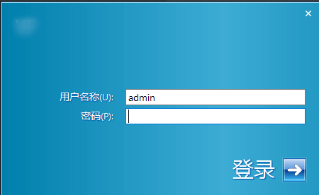
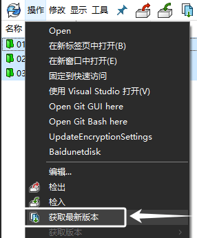
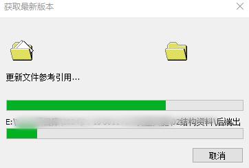
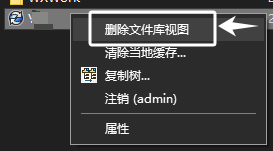
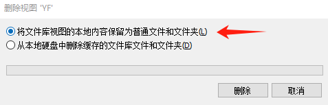
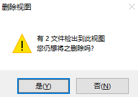
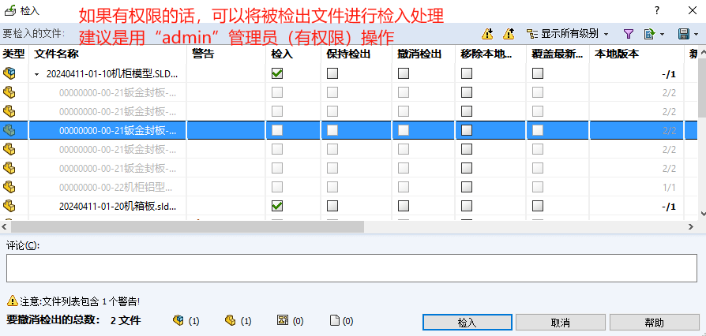
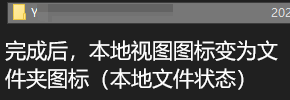
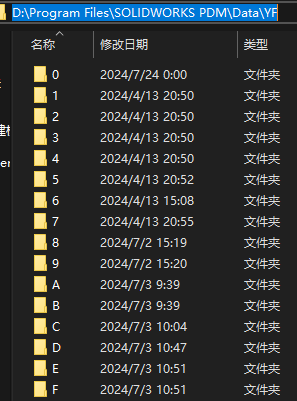

导出存档文件
导出PDM库中的存档文件，相当于是“下载”库中文件，然后“断开”和库的索引关联。而下载和断开，在本文介绍中是PDM的【获取最新版本】和【删除本地视图】两操作步骤。
获取最新版本
首先登录到PDM本地视图文件夹中，建议是使用“admin”等有权限的PDM账号。选择需要导出存档文件（或文件夹），使用【操作-获取最新版本】
获取会展示文件列表，供我们选择文件下载最新版本。这里只需Ctrl+A全选，再勾选获取即可。

获取过程也相当于是下载过程。因此会需要一定的时间等待；
删除本地视图
选择将文件库视图的本地内容保留为普通文件和文件夹。
删除过程可能会需要填写PDM身份验证，建议是用“admin”PDM账号登录处理。
（可能会遇到）有XX文件检出到此视图您仍想将之删除吗？这将产生影响是：被检出的文件无法获得到本地文件夹中
如果有权限的话，可以将检出文件进行检入操作。建议是用“admin”PDM账号登录处理，这可以确保有足够权限处理部分“被检出的文件”回到PDM库中。
完成【删除本地视图】操作后，PDM本地视图将变化图标成文件夹图标，也就是本地文件状态

数据源文件
存档文件夹
PDM源文件（物理文件），会存放在存档服务器的如下路径中。不管这里面的文件是通过编码保管，SQLserver做索引查找的。因此不易人为查找和使用。需要搭配SQL数据库
